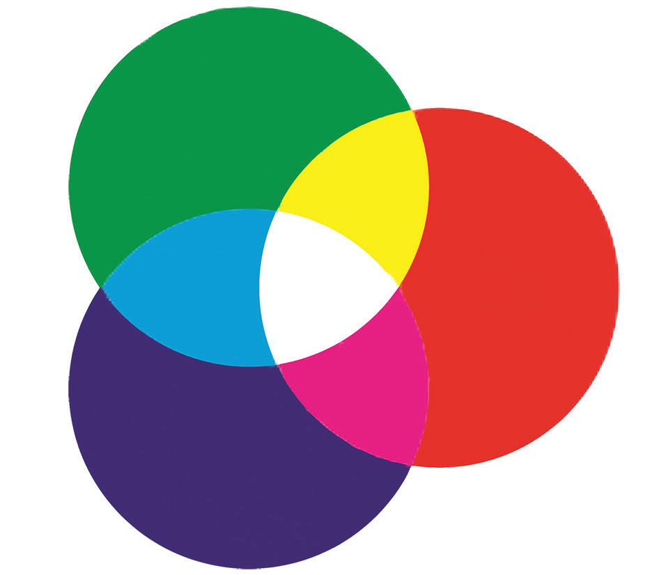

combine to produce magenta, which is the complement of green. Thus, two primary colours combine to produce the complement of the third primary colour, whereas the three primary colours combine to produce white light. One can easily remember the combinations of primary colours of light by observing the circles in Figure 5.25.

Addition and subtraction of light colours
When you look at an object and perceive a distinct colour, you are not necessarily seeing a single colour of light, rather a combination of different colours. Consider, for instance, that you are looking at a shirt that appears yellow. There may be several colours of light with varying intensity that strike your eye after being reflected by the shirt. Yet your eye-brain system interprets the colours that strike your eye, and the shirt is perceived to be yellow. Understanding how different colours are perceived requires knowledge of adding and subtracting light colours.
Addition of colours of light
Generation of various colours of light by mixing of the three primary colours of light is known as colour addition. The colour addition principles can be used to make predictions of the colours that would result when different coloured lights are mixed. For example, red (R) light and green (G) light add together to produce yellow (Y) light. Red light and blue light add together to produce magenta (M) light. Green light and blue (B) light add together to produce cyan (C) light. Finally, red light, green light and blue light add together to produce white light. Moreover, addition of complementary colours of light produces white light. The addition of light colours can be described by the following equations;
Note that, Figure 5.26 can conveniently summarise the colour addition equations.